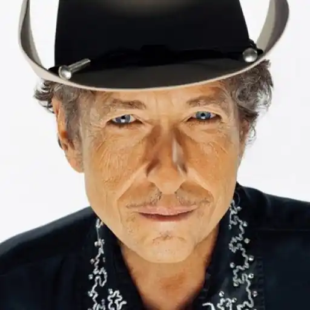
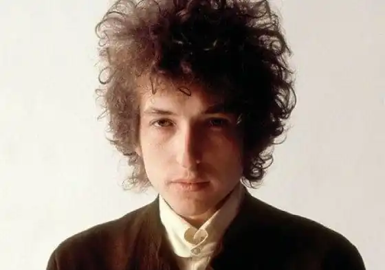
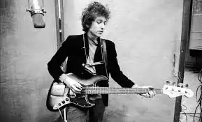
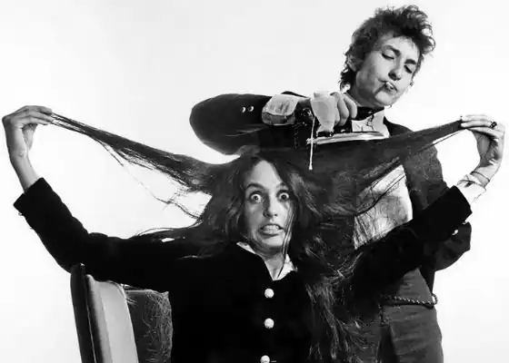
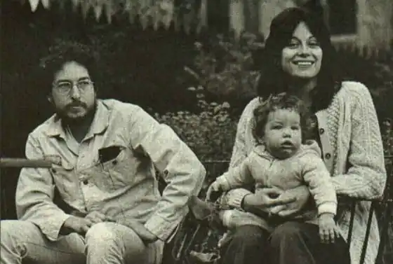
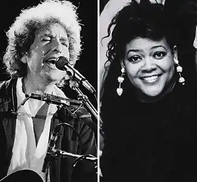

Боб Ділан — культовий музикант, автор пісень, актор, художник і письменник. Культова фігура американський фолк-і рок-сцени з 60-х років XX століття. Автор безсмертних хітів "Blowin 'in the Wind" і "Knockin' the Heaven's Door". Засновник течії "кантрі-рок". Один з негласних символів лівого антивоєнного американського руху. Лауреат Нобелівської премії з літератури 2016 року.
Боб Ділан (справжнє ім'я — Роберт Аллен Циммерман) з'явився на світ у невеликому містечку Дулут в штаті Міннесота, в сім'ї євреїв-емігрантів з Росії, які втекли з Одеси від єврейських погромів в 1905 році. Його батько, Абрахам Циммерман, і мати, Беатриса, Стоун були активними учасниками єврейської громади міста. У 1947 році у батька юного Ділана медики виявили страшну хворобу — поліомієліт. У пошуках хороших лікарів сім'ї довелося перебратися в місто Хіббінг.
З дитинства Боб НЕ відлипав від радіо, коли в ефірі крутили блюз. Але особливо сильно на майбутнього музиканта діяли фолькові композиції у виконанні Хенка Вільямса і Вуді Гатрі. Величезний вплив на Ділана надав другий саме другий музикант. Деякі мотиви творчості Гатрі — від текстів пісень до прийомів гри на гітарі і манери виконання — простежуються в ранній творчості Боба Ділана. У Хіббінг Роберт навчився грати на гітарі і познайомився з інструментом, який згодом став його улюбленим, — губною гармошкою. У 10 років Ділан спробував себе в віршотворчість. Під час навчання в школі Ділан виступав у складі народного музичного ансамблю, що виступав в громадських місцях: барах, кафе, клубах. Поступово в Університет Міннесоти в 1959 році, Роберт продовжив займатися музичною творчістю. У цей час починає музикант почав активно концертувати по нічним клубам Міннеаполіса. Десь за їх лаштунками і з'явився його перший (і став основним) музичний псевдонім — Боб Ділан. "Прізвище" музикант взяв в честь валлійського поета Ділана Томаса, хоч і заперечував цей факт протягом довгого часу. Боб Ділан в фолк-музиці На початку 60-х Ділан прийняв рішення професійно зайнятися музичною кар'єрою. У 1961 році він кинув університет і перебрався в Нью-Йорк. Там йому вдалося влитися в місцеву музичну сцену Нижнього Манхеттена і познайомитися з кумиром дитинства Гутрі, який в той час лежав у лікарні з ураженнями центральної нервової системи. Весь вільний час Боб Ділан присвячував спілкуванню з іншими музикантами і дуже швидко набрався досвіду від колег-професіоналів. Через кілька місяців після приїзду Боба Ділана в Нью-Йорк його ім'я стало відомо за межами досить вузького кола фолк-сцени. Під час одного з виступів Ділана його музику почув критик Роберт Шелтон. При його сприянні Ділан уклав контракт з лейблом Columbia Record, після чого почав роботу над першим сольним альбомом. Дебютна платівка вийшла в лютому 1962 року і називалася "Bob Dylan". До платівки увійшли рімейки класичних блюзових і фолкових пісень і дві авторські речі Ділана. А в серпні того ж року співак офіційно поміняй своє ім'я на Боб Ділан. Матеріал для своєї наступної платівки "The Freewheelin 'Bob Dylan" — пісні, повні протесту і підтекстів з політичним ухилом — Ділан підготував всього за рік. Під тиском свого директора музикант, який прагнув записати диск з рок-н-рольної подачею, виконав композиції в акустичній фолкової манері, використовуючи тільки гітару і губну гармошку Студійник вийшов вельми "сирим" в технічному плані, проте він підвів своєрідну межу в розвитку течії фолк-музики. Настрої апокаліптичного характеру з описами ядерної зими в треку "A Hard Rains a-Gonna Fall" виявилися вельми доречними під час "Карибської кризи". Величезний вплив на борців за права чорношкірого населення справила пісня "Blowin 'in the Wind", яка з моменту релізу була переспівати безліччю різноманітних виконавців і "засвітилася" в ряді легендарних фільмів, в тому числі в культовій стрічці "Форрест Гамп" з Томом Хенксом. Ця платівка вплинула не тільки на любителів і виконавців фольку, а й на рок-зірок світового масштабу, наприклад, на легендарних британців з "Бітлз", показавши ліверпульської четвірки, що поп-музика може нести не тільки ліричний посил, а й говорити про соціальні проблемах. У 1964 році у Ділана вийшли ще два альбоми. Першим був диск з треками протестного спрямування — "The Times They AreA-Changing". За ним пішла платівка "Another Side of Bob Dylan" з невиданими композиціями, якій Ділан підтвердила свою причетність і до блюзу з ритм-енд-блюзом. Композиції з другого випущеного альбому стали більш складними з точки зору віршування. Тут свій вплив наклало захоплення Ділана текстами Кітса і Рембо. У 1965 році під впливом з'явилися рок-обробок його пісень іншими виконавцями Ділан вирішив перебудуватися з виконання акустичного фолку на фолк-рок. Зібравши рок-команду, він випустив в березні цього року нову студійну запис "Bringing It AllBack Home". Презентуючи цю фолк-рокову платівку на фолк-фестивалі в місті Ньюпорт, музикант зустрів абсолютне нерозуміння у публіки, яка чекала від улюбленого виконавця продовження протестних пісень; Ділана освистали. Боб Ділан рок-музикант Влітку 65-го вийшла повноцінна рок-платівка Ділана "Highway 61 Revisited". Її вихід передувало поява синглу "Like a Rolling Stone", який згодом став першим списку "5000 кращих пісень усіх часів". З цим альбомом музикант гастролював в 65-66 роках спільно з групою The Hawks (що стала пізніше називатися The Band). Найбільш вдалими виступами цього туру були концерти в Великобританії. У 1965 році світ також побачила експериментальна проза Боба Ділана, що вийшла під титли "Тарантул". Музикант надихався жанром "потоку свідомості" в стилі Керуака, Гинзберга і Берроуза. У травні 66-го року Боб Ділан випустив подвійний диск "Blonde on Blonde", на якому продовжив розвиток тематики і звучання попередніх двох студійних робіт. Таким чином, можна говорити про існування рок-трилогії в музичній спадщині Ділана. Засновник кантрі-року У липні 66-го, після серйозної мотоциклетної аварії, Ділан деякий час жив відлюдником і експериментував з жанрами та звучанням. Вимушений творчу відпустку вилився в черговий студійний альбом. У грудні 67-го побачила світ платівка "John Wesley Harding" — синтез кантрі та рок-музику, що породив нове музичне протягом, кантрі-рок. Нове захоплення музиканта знову зустріли прохолодно його фанатами, однак він знайшов нових слухачів серед шанувальників кантрі-музики з південних штатів країни. Музична братія також поставилася позитивно до цієї роботи, і багато пісень з диску переспівують відомими виконавцями, наприклад, Джиммі Хендріксом. Після цього Боб переїхав в Нешвілл, "столицю кантрі". Тут він знову почав експериментувати з манерою виконання і тембром голосу, щоб записати в союзі з Джонні Кешем і сесійними музикантами новий альбом "Nashville Skyline". Диск з'явився на прилавках в 69-м, і за звучанням був ще ближчий до класичного кантрі. Криза в кар'єрі Боба Ділана На початку 70-х музикант Боб Ділан переживав творчий ступор, але продовжував випускати альбоми. Так вийшла в світ подвійна платівка з концертними записами, переспіви старих пісень і кавери на чужі під назвою "Self-Portrait". Новий альбом породив плітки про те, що Ділан "видихався". Але криза скоро закінчився. У жовтні 70-го року Ділан видав ще одну, вже шосту за рахунком студійну роботу — "New Morning". Вона очолила найбільші чарти Британії. У 1973 Ділан написав одну зі своїх найкращих пісень, що стала візитною карткою музиканта — "Knockin 'on Heaven's Door". Вона прозвучала у фільмі "Пет Герретт і Біллі Кід" (1973), В цій же карині Боб Ділан виступив в якості актора. Чверть століття потому ця композиція стала лейтмотивом пронизливої трагікомедії "Достукатися до небес" з Тілем Швайгер і Яном Ліферс. Новий підйом У 1974 році у Ділана, який змінив звукозаписний лейбл, вийшов перший за 3,5 року альбом "Planet Waves". Після цього музикант вирушив у концертний тур по Америці, який став найбільш комерційно вдалим за всю історію рок-музики. За підсумками туру Ділан випустив концертний вініл "Before the Flood". А в 1975 відбувся реліз нової студійної роботи значно виріс в музичному і виконавському плані Ділана — "Blood on the Tracks". Альбом з пісенними шедеврами исповедальной лірики Боба Ділана став одним з найприбутковіших в кар'єрі музиканта. Натхненний таким успіхом, Ділан організував масштабний концертний тур за участю The Band, Дж. Мітчелла, М. Ронсона і А. Гінзберга, що продовжився з осені 1975 по листопад 1976 року. У завершальному концерті туру ( "Останній вальс"), який став прощальним для групи The Band, взяло участь безліч відомих виконавців того часу, а Мартін Скорсезе зняв там одне з найвідоміших концертних відео в музичній історії. Ділан і християнство З виходом в 1979 році альбому "Slow Train Coming" у творчості Ділана відбулася зміна курсу на користь християнської тематики. З цього часу в своїх текстах музикант почав різко засуджувати проституцію і порно. Цей і наступні за ним диски не були прийняті широкою публікою, на противагу такому до себе відношенню музикант став активно концертувати. Під час своїх гастролей він добрався навіть до Радянського Союзу. Після концерту в Москві в 1985 році його манеру виконання і досвід перейняли радянські рокери Борис Гребенщиков і Майк Науменко. У червні 1988 року Ділан повідомив про початок нескінченного турне "Never Ending Tour", яке триває до наших днів. Спочатку він давав по 200 концертів на рік. Двохтисячне шок було відіграно 16 жовтня 2007 року в Дейтоні, Огайо. Кар'єра Боба Ділана в 90-е На початку 90-х Ділан записав свій двадцять п'ятого диск "Under the Red Sky", який провалився в продажу, хоча в записі якого брали участь такі зірки як Елтон Джон, Джордж Харрісон, Ел Купер і багато інших запрошені музиканти. Після невдачі музикант не записував нові альбоми протягом семи років. У 97-му Ділан у важкому стані потрапив до лікарні із загостренням серцевого захворювання. На щастя, йому вдалося поправити своє здоров'я. Восени того ж року він відвідав Болонью, де Папа Римський виголосив перед натовпом в 200 тисяч чоловік проповідь, грунтуючись на тематиці пісні Боба Ділана "Blowin 'in the Wind".